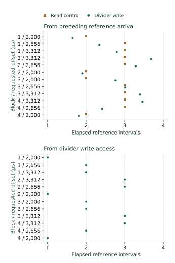

Question and rationale
The converter-enable comparison found that disable/re-enable preserved compatibility with the preceding arrival cadence. The divider-setting comparison had already established reversible spacing changes. Does writing that pacing register alter the timing origin even when the selected value stays the same?
This investigation separates a performed register write from a change of setting. Its purpose is to characterize local timing control for coordinating subsequent physical-state establishment and observation toward Seigsit creation and transfer.
Method
Retain divider A=0x00ffff00 and B=0x00dfff00 in A–B–B–A order, converter enable, internal input 4 and existing clock controls. Every condition observes a four-millisecond continuous reference, stops, requires readiness and drains locally to empty. The last unit occupancy increase provides the reference-arrival bracket.
The six-access intervention reads converter CS, waits 200 µs using only the counter, then either reads ADC DIV or writes its existing selected value once. The write requires an exact preceding-value match and retains immediate readback. Both variants then require the exact divider, enabled-ready CS and empty/error-clear FCS. A failed guard or admission refuses the restart.
Each block has ten conditions: a no-command control after the write; read/write pairs of observed continuous restarts at offsets 2,000, 2,656 and 3,312 µs; a quiet continuous pair at 2,656 µs; and a single-command control after the write. Blocks 2 and 4 reverse the full order. Offsets are measured from the preceding arrival bracket's upper counter. The restart window is four milliseconds; actual access and command counters are recorded separately.
No FIFO consumption occurs inside either acquisition window, and no SD persistence occurs between reference acquisition and restart stopping. Recover the restart queue after report persistence, retain the two-millisecond stopped check, then require empty/ready controls and retained divider. Final cleanup restores converter, queue, divider and clock. Observation bounds remain sixteen changes and 262,144 completed status reads per window, with sixteen entries per recovery.
Assessment criteria
Acceptance requires complete execution, admitted settings, exact preceding and immediate returned divider values, performed write/read counts, successful later admissions, zero/one-entry controls, error-free recovery and restoration. A timing change is an outcome, not a requirement for acceptance. If an immediate divider read differs but the later check matches, native execution may continue; that discrepancy still prevents full comparison acceptance.
Arrival brackets extend from the preceding queue-status read's first counter to the changed read's last counter. Consecutive brackets bound later spacing. Compare each observed continuous first arrival with integer continuations of its immediately preceding reference cadence, and separately with integer intervals from the divider-write access when present. These are conservative compatibility intervals, not confidence intervals or direct observations of internal phase. An unobserved fixed latency after an internal reset remains possible.
Preparation and implementation
Candidate 0FEE22675E1B uses all eight literal SEIGRASM instruction streams unchanged from 73103A41FB4C. The existing six-access intervention entry receives the new operation data. Its 450-cell report preserves the reference, local recovery, intervention and restart. The schedule has 277 operations and at most 2,969 records, including 24 explicit divider writes and sixteen read controls.
All 51 image-bound supplied-response checks passed, covering retained and write-related timing origins, same-value write execution, guard/readback/readiness/queue failures, missed deadlines, partial reports, cleanup and recording failure. Both installation readbacks matched the image. The frozen protocol specifies a three-minute powered procedure. These preparation checks supply no physical result.
PC tools package the authored opcodes and decode the recording. No foreign compiler produces the target implementation. ROM/EEPROM entry, AArch64 execution and counter, SD and PCIe/RP1 interfaces, retained bridge configuration, RP1 xosc and existing component firmware state remain apparatus dependencies. The acquisition sequence makes no firmware-service request.
Results
All 2,969 records, 277 operations and 40 conditions completed with accepted execution. All 24 write interventions recorded one write and two reads, with preceding, requested and immediate returned divider values equal. All sixteen read controls recorded one read and no intervention write. Every subsequent divider, readiness and empty-queue check passed.
All twelve observed continuous write trials departed from the preceding cadence and were compatible with integer intervals measured from the divider-write access. All twelve read-only controls retained compatibility with their preceding cadence. The distinction occurred at both settings and in both block orders. The first observed arrival following a write was compatible with one, two or three reference intervals from that write, depending on when continuous acquisition began.

Spacing remained setting-dependent
The 146 later-spacing brackets from reference windows and observed continuous restarts retained a common interval in every block. Spacing remained approximately 1.31 ms at A and 1.15 ms at B. Each of the four B/A comparisons includes 0.875 and excludes 1. All block intervals are compatible with the preceding divider and enable-cycle returns.
| Block / setting | Brackets | Counter ticks | Spacing, µs |
|---|---|---|---|
| 1 / A | 32 | 70,703–70,898 | 1,309.315–1,312.926 |
| 2 / B | 43 | 61,841–62,041 | 1,145.204–1,148.907 |
| 3 / B | 39 | 61,845–62,038 | 1,145.278–1,148.852 |
| 4 / A | 32 | 70,645–70,895 | 1,308.241–1,312.870 |
Entry counts and timing origin
Read-only controls repeated the earlier count pattern: three entries at all A offsets, and four, three and four at B. The write intervention changed some counts at B even though the selected value was unchanged.
| Block / setting | Read control | Divider write |
|---|---|---|
| 1 / A | 3 / 3 / 3 | 3 / 3 / 3 |
| 2 / B | 4 / 3 / 4 | 4 / 3 / 3 |
| 3 / B | 4 / 3 / 4 | 3 / 3 / 4 |
| 4 / A | 3 / 3 / 3 | 3 / 3 / 3 |
At the central offset, all four quiet read controls retained three entries. Quiet write conditions retained three, four, three and three across the four blocks. Thus quiet and observed counts differed in block 2's write condition at B. Their timing relative to the write also differed: command access began about 2,096–2,099 µs after the write in the quiet condition and 2,384–2,388 µs afterwards in its observed counterpart. The experiment matched deadlines to the old reference arrival, so it did not match command delays to the new write-related origin.
Conditional model assessment: assume recurring arrivals from the write-access bracket with spacing inside that trial's preceding reference interval. Count scheduled arrivals definitely after command completion and before the observation deadline, and separately those possibly after command start and before stop completion. Both calculations give the same count for every continuous write condition and match all sixteen recovered counts, including the four quiet windows. This accounts for the count variation under that model. It does not directly measure arrivals inside quiet windows or establish that polling has no effect.
Controls, recovery and restoration
All four no-command controls after a divider write remained empty; all four single-command controls retained one entry. Every observed change was a unit occupancy increase. No observation-capacity exhaustion, overflow, underflow or per-entry error was recorded. All eighty reference/restart recoveries ended empty; stopped checks remained empty and ready, and final cleanup recovered zero entries.
Reference windows retained three entries in 27 conditions and four in thirteen. The 240 raw codes across reference and restart recoveries ranged from 841 to 860. They carry no calibrated temperature or voltage interpretation here.
The 200 µs intervention waits measured 200.222–200.611 µs. Arrival-referenced wait overshoot was 3–34 ticks (0.056–0.630 µs). The coordinator interval was 116.566299 seconds, excluding boot loading and the terminal record's final write/readback. All conversions to elapsed time use the reported 54 MHz frequency, which was not independently calibrated.
Converter control returned to zero, queue control to its empty entry value 0x100, divider to zero and clock control to zero. Recorded route and clock observations agreed before and after access. These checks do not establish exclusive component ownership.
Interpretation and next investigation
Inference: an explicit write of the unchanged divider value establishes a write-related timing origin under the tested conditions. The read controls preserve prior alignment, the write trials change it, and their later spacing remains compatible with the selected setting. This supplies evidence for control of arrival timing beyond the stop/restart and enable-cycle interventions. It does not identify the internal circuit or directly observe its phase.
The next proposed investigation should anchor restart deadlines to the measured divider-write access itself. Compare quiet and observed acquisitions at matched write-relative delays, with two deliberately different positions within the measured cadence, the same no-command/single-command controls and complete restoration. This tests whether the newly observed control can place acquisition predictably within the cadence and removes the unmatched timing visible in the present count comparison. A further boot also tests recurrence of the write-related alignment.
Only one boot of this intervention has been observed. General divider laws, internal conversion instants, independent analog freshness, calibrated state establishment and physical Seigsit transfer remain unresolved. The result characterizes a local timing action for further direct-silicon development; queue records alone do not establish a Seigsit or Hyphos bootstrap.
Evidence and provenance
Two read-only 64 MiB captures agreed exactly. Capture SHA-256: b0987fed905312b3a651d1818ed8b7fee93815077cb0962450a09f34ee507288. Prepared-image SHA-256: 4738fbd6811f5ca1d06fd239683c71b5f2ec75d7875c72f8db467f8878e07e60.
Independent reconstruction checks every reserved journal sector's identity, ordinal, senary fields, padding and integrity, the nested interventions and arrival brackets, and unchanged unused reservations. The partition table and both boot files were unchanged. Seven boot-volume sectors outside the journal differ, including a System Volume Information directory; their writer and timing are not established. Actual powered duration and boot count were not separately reported.